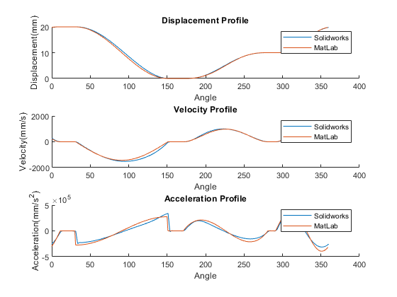
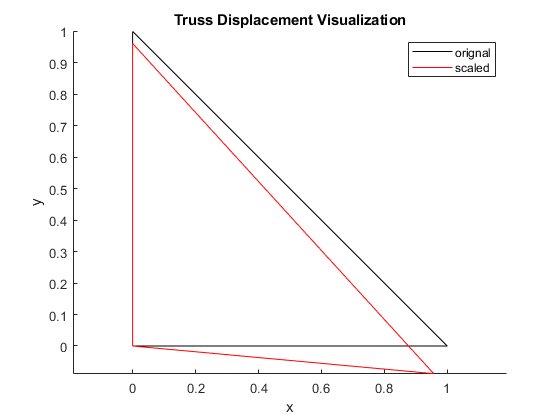

clear all;
close all;
clc;
format long;
name = 'Natalie Ratzlaff';
id = 'A17091327';
hw_num = 4;
ta = 0:109;
tb = 110:119;
tc = 120:199;
td = 200:219;
te = 220:339;
tf = 340:359;
w = (1000)*2*pi/60;
ya = 100.*(ta./110).^3 - 150.*(ta./110).^4 + 60.*(ta./110).^5;
dya = (300.*(ta./110).^2 - 600.*(ta./110).^3 + 300.*(ta./110).^4)*w;
d2ya = (600.*(ta./110) - 1800.*(ta./110).^2 + 1200.*(ta./110).^3)*w^2;
yb = 10 + 0.*tb;
dyb = 0.*tb;
d2yb = 0.*tb;
yc = 10 + 10.*((tc-120)./80 - 1/(2*pi)*sin(2*pi.*(tc-120)./80));
dyc = (10*(w/80).*(1-cos(2*pi.*(tc-120)./80)))*w;
d2yc = (20*pi*(w/80)^2.*sin(2*pi.*(tc-120)./80))*w^2;
yd = 20 + 0.*td;
dyd = 0.*td;
d2yd = 0.*td;
ye = -10.*(1-cos(pi.*(te-220)./120)) + 20;
dye = (-10*(pi*w/120).*sin(pi.*(te-220)./120))*w;
d2ye = (-10*(pi*w/120)^2.*cos(pi.*(te-220)./120))*w^2;
yf = 0.*tf;
dyf = 0.*tf;
d2yf = 0.*tf;
t = [ta tb tc td te tf];
y = [yc(70:80) yd ye yf ya yb yc(1:69)];
dy= [dyc(70:80) dyd dye dyf dya dyb dyc(1:69)]./2;
d2y = [d2yc(70:80) d2yd d2ye d2yf d2ya d2yb d2yc(1:69)]./3;
disp = readmatrix("follower_disp.csv");
vel = readmatrix("follower_vel.csv");
acc = readmatrix("follower_acc.csv");
figure(1);
subplot(3,1,1);
hold on;
plot(disp(:,1).*360./0.06,disp(:,2)-26);
plot(t,y);
title('Displacement Profile');
xlabel('Angle');
ylabel('Displacement(mm)');
legend('Solidworks','MatLab');
subplot(3,1,2);
hold on;
plot(vel(:,1).*360./0.06,vel(:,2));
plot(t,dy);
title('Velocity Profile');
xlabel('Angle');
ylabel('Velocity(mm/s)');
legend('Solidworks','MatLab');
subplot(3,1,3);
hold on;
plot(acc(:,1).*360./0.06,acc(:,2));
plot(t,d2y);
title('Acceleration Profile');
xlabel('Angle');
ylabel('Acceleration(mm/s^2)');
legend('Solidworks','MatLab');
p1a = 'See figure 1'
p1b = 'Solidworks and MatLab plots are very similar, and discrepancies likely originate from the 2 degree resolution used for Solidworks, as compared to the 1 degree resolution for MatLab, so Matlab is likely to be more accurate.'
p2a = [60 -60 0;-60 180 -120;0 -120 120]
K = [180 -120; -120 120];
p2b = inv(K)*[10;-20]
p2c = [10; 10; -20]
a = 45;
T = [cos(a) -sin(a) 0 0; sin(a) cos(a) 0 0; 0 0 cos(a) -sin(a); 0 0 sin(a) cos(a)];
Ke = [1 0 -1 0; 0 0 0 0; -1 0 1 0; 0 0 0 0];
E = 210000000000;
P = 64000;
A = pi()*0.025^2;
p4a = (E/sqrt(2))*T*Ke*inv(T)
p4b = E*[0 0 0 0; 0 1 0 -1; 0 0 0 0; 0 -1 0 1]
p4c = E*Ke
m12 = zeros(6,6);
m12(1:4,1:4) = p4a;
m23 = zeros(6,6);
m23(3:6,3:6) = p4b;
m31 = E*[1 0 0 0 -1 0; 0 0 0 0 0 0; 0 0 0 0 0 0; 0 0 0 0 0 0; -1 0 0 0 1 0; 0 0 0 0 0 0];
p4d = m12 + m23 + m31
m = [p4d(1,1) p4d(1,2) p4d(1,4); p4d(2,1) p4d(2,2) p4d(2,4); p4d(4,1) p4d(4,2) p4d(4,4)];
u = P/(2*A).*inv(m)*[sqrt(3);1;0];
p4e = u(1:2)
p4f = [0;u(3)]
p4g = [0;0]
F = (1/A).*p4d*[u(1); u(2); 0; u(3); 0; 0];
p4h = F(1:2)
p4i = F(3:4)
p4j = F(5:6)
figure(2)
hold on;
plot([0;1],[0;0],'k');
plot([0;0],[0;1],'k');
plot([0,1],[1,0],'k');
plot([0;1-500*u(1)],[0;-500*u(2)],'r');
plot([0;0],[0;1-500*u(3)],'r');
plot([0,1-500*u(1)],[1-500*u(3),-500*u(2)],'r');
legend('orignal','','','scaled');
title('Truss Displacement Visualization');
xlabel('x');
ylabel('y');
axis equal;
p4k = 'See figure 2'
p1a =
'See figure 1'
p1b =
'Solidworks and MatLab plots are very similar, and discrepancies likely originate from the 2 degree resolution used for Solidworks, as compared to the 1 degree resolution for MatLab, so Matlab is likely to be more accurate.'
p2a =
60 -60 0
-60 180 -120
0 -120 120
p2b =
-0.166666666666667
-0.333333333333333
p2c =
10
10
-20
p4a =
1.0e+11 *
Columns 1 through 3
0.409784433188375 0.663758658349608 -0.409784433188375
0.663758658349608 1.075139807303374 -0.663758658349608
-0.409784433188375 -0.663758658349608 0.409784433188375
-0.663758658349608 -1.075139807303374 0.663758658349608
Column 4
-0.663758658349608
-1.075139807303374
0.663758658349608
1.075139807303374
p4b =
1.0e+11 *
Columns 1 through 3
0 0 0
0 2.100000000000000 0
0 0 0
0 -2.100000000000000 0
Column 4
0
-2.100000000000000
0
2.100000000000000
p4c =
1.0e+11 *
Columns 1 through 3
2.100000000000000 0 -2.100000000000000
0 0 0
-2.100000000000000 0 2.100000000000000
0 0 0
Column 4
0
0
0
0
p4d =
1.0e+11 *
Columns 1 through 3
2.509784433188375 0.663758658349608 -0.409784433188375
0.663758658349608 1.075139807303374 -0.663758658349608
-0.409784433188375 -0.663758658349608 0.409784433188375
-0.663758658349608 -1.075139807303374 0.663758658349608
-2.100000000000000 0 0
0 0 0
Columns 4 through 6
-0.663758658349608 -2.100000000000000 0
-1.075139807303374 0 0
0.663758658349608 0 0
3.175139807303375 0 -2.100000000000000
0 2.100000000000000 0
-2.100000000000000 0 2.100000000000000
p4e =
1.0e-03 *
0.086507042314220
0.175784784014370
p4f =
1.0e-04 *
0
0.776069817743337
p4g =
0
0
p4h =
1.0e+10 *
1.437642243699062
0.830023136398031
p4i =
1.0e+09 *
-5.124310714496986
0.000000000000002
p4j =
1.0e+09 *
-9.252111722493629
-8.300231363980307
p4k =
'See figure 2'
 